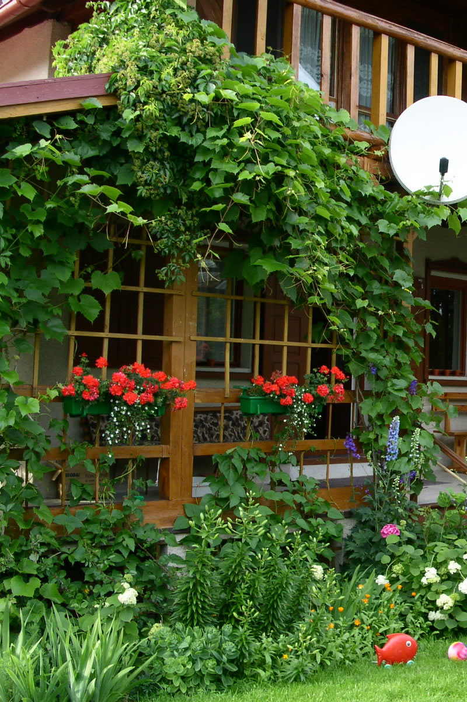
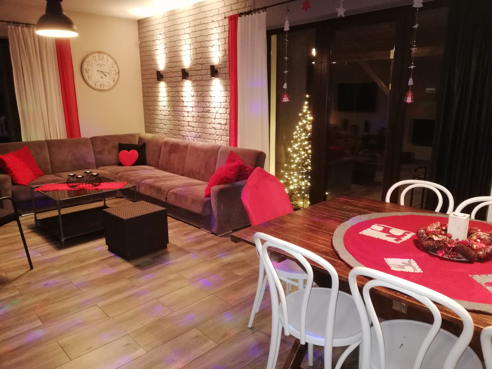
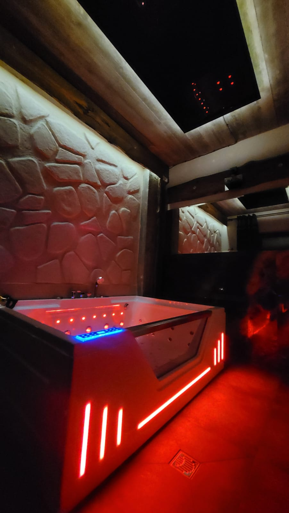
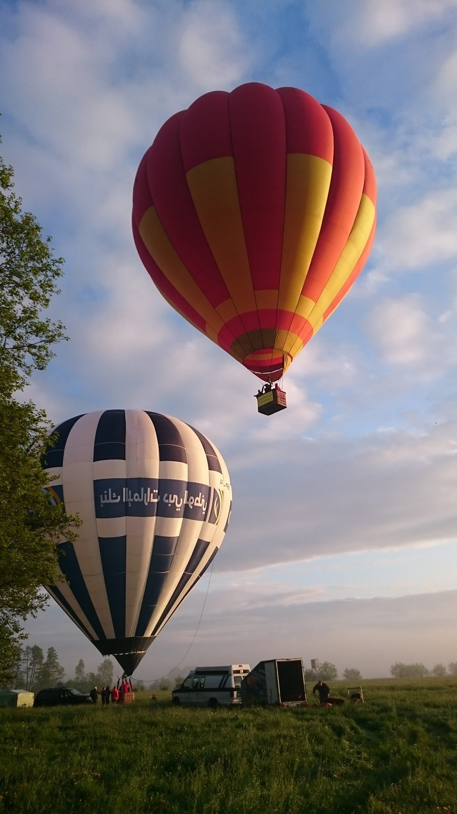

Woszczele · Mrozy Wielkie · Ełk
Cudowny odpoczynek
blisko natury.
Jeżeli cenisz spokój, piękne otoczenie i świeże powietrze – serdecznie zapraszamy do naszych domków na Mazurach.
O Cudodomkach
Mazury, do których
wraca się sercem.
Niedaleko Ełku, znajdują się trzy domki stworzone dla odpoczynku w rytmie natury. Woszczele leżą 60 m od plaży nad jeziorem Sawinda, a Mrozy Wielkie – przy lesie i 800 m od plaży nad jeziorem Selmęt Wielki. Stanowią one doskonałą bazę wypadową do zwiedzania. Poniżej znajduję się lista miejsc, ktore (w czasie forszej pogody) warto odwiedzić:
Odkryj naszą okolicę →Wybierz swój rytm
Każdy domek ma
własną historię.
Przestrzeń dla wspólnych poranków, długich rozmów i małych przygód – o każdej porze roku.
Domek nad jeziorem
Cudodomek Woszczele
Komfortowy domek usytuowany zaledwie 60 metrów od urokliwej plaży nad jeziorem Sawinda. Idealne miejsce dla rodzin oraz grup przyjacielskich szukających bliskości wody i natury.
- Pojemność: do 6 osób (2 sypialnie + salon)
- Lokalizacja: Woszczele, ul. Modrzewiowa 1
- Atuty: 60m do plaży, duży taras, kominek, grill, prywatny ogród
- Cena: od 699 zł / doba

Dom przy lesie ze SPA
SPA Mrozy Wielkie
Cudowny całoroczny dom położony nad jeziorem Selmęt Wielki w Mrozach Wielkich koło Ełku przy ul. Jaśminowej 28. Usytuowany jest przy samym lesie, 800m od dobrze zagospodarowanej, piaszczystej, czystej gminnej plaży nad jeziorem Selmęt Wielki. Na plaży znajduje się długi pomost, miejsce do gry w siatkówkę, zadaszone wiaty. Po drugiej stronie jeziora w miejscowości Szeligi dodatkowo znajduje się duża, strzeżona plaża z możliwością wypożyczenia sprzętu wodnego. Można tam również posmakować zapiekanek, hot-dogów i napić się zimnego piwa.
Powierzchnia domu to 150m², przeznaczona do 10 osób. Posesja ogrodzona i bardzo dobrze zagospodarowana. Dodatkowo bezpłatny parking na terenie posesji i bezpłatne Wi-Fi. Najbliższy sklep w Ełku (ok. 4 km). W samej wsi Mrozy Wielkie jest również możliwość wypożyczenia łódki i kajaków w zaprzyjaźnionym gospodarstwie agroturystycznym (500 m od naszej posesji). Jest tam również możliwość wykupienia domowych obiadów – tel. (87) 6204735.
- Pojemność: do 8-10 osób (3 sypialnie + salon)
- Lokalizacja: Mrozy Wielkie, ul. Jaśminowa 28
- Atuty: Prywatna strefa SPA (jacuzzi + sauna), bliskość lasu, balia ogrodowa
- Cena: od 950 zł / doba

Intymny relaks we dwoje lub z przyjaciółmi
SPA Loft
Stylowy, kameralny domek w duchu loftowym z przeszkleniami otwieranymi na zieleń. Stworzony z myślą o osobach ceniących unikalny design, prywatność oraz relaks w jacuzzi pod gołym niebem.
- Pojemność: do 4 osób
- Lokalizacja: Mrozy Wielkie
- Atuty: Całoroczne jacuzzi na wyłączność, nowoczesny wystrój loftowy, klimatyczne oświetlenie
- Cena: od 750 zł / doba


Naturalnie blisko
Las, woda
i dużo oddechu.
Domki zlokalizowane są w okolicy Ełku, serca Mazur, z którego szybko można dotrzeć do wszystkich najciekawszych miejsc na Mazurach i Pojezierzu Suwalsko-Augustowskim. W okolicy znajdują się liczne plaże, lasy, parki krajobrazowe, stawy wędkarskie i wiele wiele innych.
Komfort bez kompromisów
Wszystko, czego
potrzebujesz.
Bezpłatne Wi-Fi
Stałe połączenie, możliwość workation (nie dotyczy cudodomku Woszczele).
Prywatny parking
Wygodne miejsce tuż przy domku.
Jacuzzi
Nowoczesna wanny z masażami.
Przyjazne zwierzętom
Twój pupil jest tu mile widziany.
Wyposażona kuchnia
Gotuj swobodnie, tak jak lubisz.
Kominek i taras
Ciepło we wnętrzu, natura na wyciągnięcie ręki.
Kadry z Cudodomków
Zatrzymaj się
na chwilę.
Kalendarz dostępności
Wybierz termin
na swój odpoczynek.
Terminy oznaczone kolorem są już zajęte. Wybierz domek i przełącz miesiąc, aby sprawdzić dostępność.
Aby potwierdzić termin, wyślij zapytanie rezerwacyjne.
Rezerwacje / ceny 2026
Sprawdź wolny
termin.
Woszczele: od 699 zł/doba do 10 osób. SPA Mrozy: 950 zł/doba do 10 osób. Minimalna długość pobytu wynosi 2 doby.
Dobrze wiedzieć
Masz pytanie?
Mamy odpowiedź.
Jeśli nie znajdziesz tu potrzebnej informacji, napisz lub zadzwoń – z przyjemnością pomożemy.
W jakich godzinach odbywa się zameldowanie? +
Zakwaterowanie od godziny 16:00, opuszczenie domku do 10:00–11:00. Inne godziny są możliwe po wcześniejszym uzgodnieniu.
Czy pobierana jest kaucja? +
Tak. Kaucja na poczet ewentualnych szkód wynosi 500 zł i jest zwracana po bezusterkowym odbiorze domu.
Czy mogę przyjechać ze zwierzakiem? +
Tak, po wcześniejszym ustaleniu. Opłata za pobyt zwierzaka wynosi 30 zł/doba lub 200 zł/tydzień.
Jak potwierdzić rezerwację? +
Rezerwacja wymaga potwierdzenia mailowego oraz wpłaty zadatku w wysokości jednej trzeciej wartości pobytu.
Zostańmy w kontakcie
Do zobaczenia
na Mazurach.
Wybierz domek, aby zobaczyć jego lokalizację na mapie:
Woszczele, ul. Modrzewiowa 1
Mrozy Wielkie, ul. Jaśminowa 28